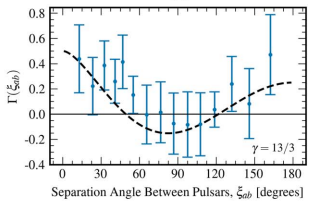
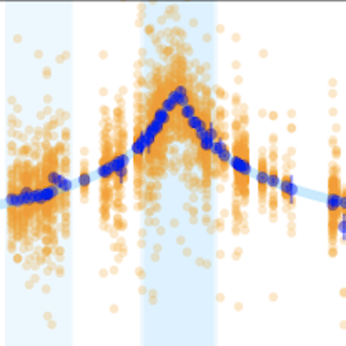
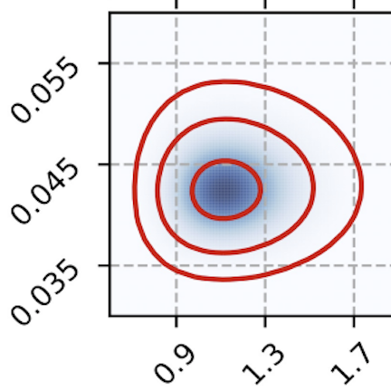
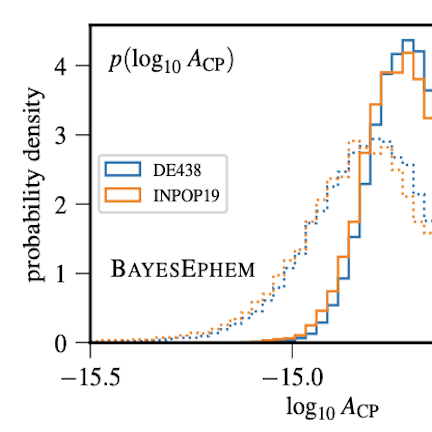

Hi, my name is Thankful!
I'm a National Research Council Postdoctoral Associate at the U.S. Naval Research Laboratory, and was previously a NASA Hubble Fellowship Program Einstein Postdoctoral Fellow at Cornell University. My research deals with millisecond pulsars (MSPs), a type of rapidly rotating neutron star.
As a full member of the North American Nanohertz Observatory for Gravitational Waves (NANOGrav) since 2015, I'm part of a large team whose goal is the detection of low-frequency gravitational waves from supermassive black hole binary inspirals. I'm currently chair of the NANOGrav Pulsar Timing Working Group. See "Selected Recent Work" for some exciting results.
You can download my CV here, and my PhD dissertation here. For publications, check out my ORCID profile.
Selected Recent Work

The NANOGrav 15 yr Data Set (Agazie et al. 2023b)
Using a 68-MSP dataset spanning nearly 16 years, NANOGrav reports our first evidence for the "Hellings and Downs" quadrupolar correlations characteristic of a gravitational wave background. We think it's likely astrophysical in nature (coming from merging supermassive binary black holes), but the signal could contain evidence for physics beyond the standard model, too. I was a key player in data set and pipeline creation as well as paper writing (including secondary science efforts) for this project. I was lucky enough to present the pulsar timing side of our results at the NSF (video here). The data set paper (Agazie et al. 2023 arXiv PDF) is here. The paper detailing the search for gravitational waves is here.
An extremely massive MSP (Cromartie et al. 2020, Nature Astronomy)
Detailing the measurement of J0740+6620's mass. This MSP is the most massive known to date, helping us constrain the neutron star equation of state. arXiv PDF here.
J0740+6620 update (Fonseca, Cromartie, et al. 2021, ApJ)
Added data leads to a higher-precision measurement of J0740+6620. arXiv PDF here. Also see the NICER papers (Riley et al. 2021, Miller et al. 2021) that use these results.
NANOGrav 12.5-year GW search (Arzoumanian et al. 2021, ApJ)
The NANOGrav 12.5-year data set is analyzed to uncover a common red noise process in our MSPs, indicating that we may eventually detect a stochastic GW background. arXiv PDF here.About Me
Born and raised in Chapel Hill, NC, I earned my B.S. with Highest Honors in Physics in 2014 from the University of North Carolina at Chapel Hill. I then attended the University of Virginia, where I finished my Astronomy PhD in May 2020. I fell in love with Astronomy during an REU at the Arecibo Observatory. (See more examples of my scientific and science-related writing over at Astrobites.) I'm passionate about making Astronomy more equitable for minoritized groups. Recently, I've been involved with the NHFP Anti-Racism initiative.
I love gardening, video games, hiking, music festivals, and other stuff, too. I'm a passionate vegan, Vim defender, and mother to an Aussie Shepherd mutt named Ezreal. I like pulsars so much that I have a tattoo on my wrist of the first one I discovered.